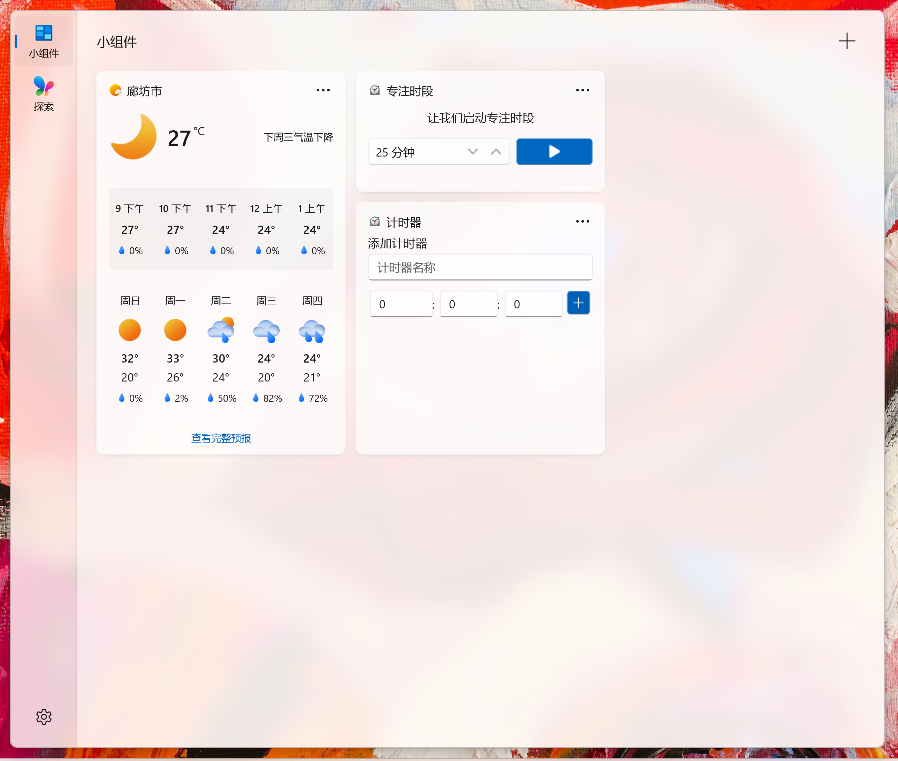

启用设置中的“自动启用开发者选项”后，应用每次安装自定义源时都会临时开启 Windows 开发者选项，完成操作后自动关闭。
自动启用开发者选项 配置即可，无需每次手动切换系统设置。如果当前设备的“设备设置地区”不是欧盟成员国，可以使用设置中的“解除自定义源地区限制”功能，强制允许显示第三方自定义源。
解除限制，确认警告并按提示授予管理员权限。可在 设置 → 高级 中使用“清除数据”重置小组件面板网页保存的本地数据。
需确保 WinUI 3 小组件处于激活状态，具体样式参见下方示例。
